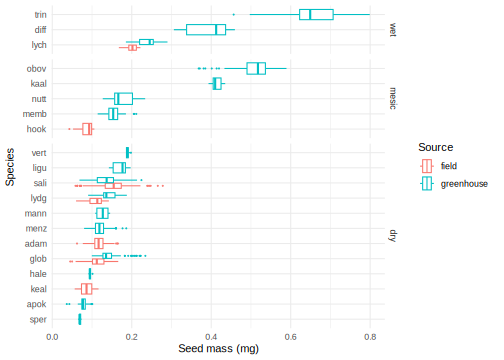
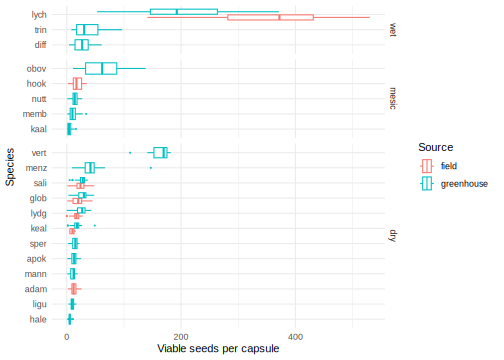
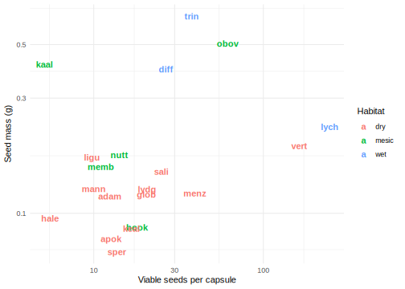
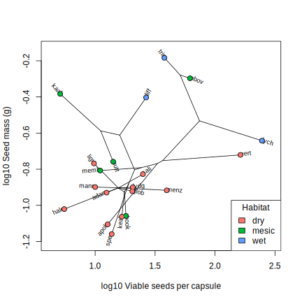

library(knitr)
knitr::opts_chunk$set(comment="", cache=T, warning = F, message = F,
fig.path = "figures-seedmass/", dev = "svglite", dev.args=list(fix_text_size=FALSE))
library(tidyverse)
theme_set(theme_minimal())seedmass <- read_csv("data/seedmass.csv") %>%
mutate(seed_mass_g = total_mass_g / seeds_weighed,
source = fct_collapse(source, field=c("Field","F"), greenhouse="GH"),
species = fct_reorder(str_remove(species, "S."), seed_mass_g),
habitat = fct_recode(habitat, "dry"="D","mesic"="M","wet"="W"))
#ggplot(seedmass, aes(x=seeds_weighed, y=total_mass_g)) + geom_point()
ggplot(seedmass, aes(y=species, x=seed_mass_g, color=source)) + geom_boxplot(outlier.size = 0.3) +
facet_grid(vars(fct_rev(habitat)), scales = "free_y", space="free") +
labs(color="Source", y="Species", x="Seed mass (g)")
seedcounts <- read_csv("data/seedcounts.csv", guess_max = 2000) %>%
mutate(source = fct_collapse(source, field="Field", greenhouse=c("GH","Source?")),
species = fct_reorder(str_remove(species, "S.|A. "), viable_seeds),
habitat = fct_recode(habitat, "dry"="D","mesic"="M","wet"="W"))
ggplot(seedcounts, aes(y=species, x=viable_seeds, color=source)) + geom_boxplot(outlier.size = 0.3) +
facet_grid(vars(fct_rev(habitat)), scales = "free_y", space="free") +
labs(color="Source", y="Species", x="Viable seeds per capsule")
speciesmeans <- seedmass %>% summarize(seed_mass_g = mean(seed_mass_g), .by=c(species, habitat)) %>%
full_join(seedcounts %>% summarize(viable_seeds = mean(viable_seeds), .by=species))
ggplot(speciesmeans, aes(x = viable_seeds, y=seed_mass_g, label=species, color=habitat)) + geom_text(fontface=2) +
scale_y_log10() + scale_x_log10() + scale_color_discrete() +
labs(color="Habitat", y="Seed mass (g)", x="Viable seeds per capsule")
library(phytools)
#from Fig 2, Nuclear BEST tree, Willyard et al. 2011
schtree <- read.nexus("data/fig2.nex") %>% drop.tip("outgroup")
schtree$edge.length=schtree$edge.length/1000
sch<-multi2di(schtree, random=FALSE)
sch$edge.length<-sch$edge.length+0.00001
sch$tip.label <- substr(sch$tip.label,1,4)
sch.p<-drop.tip(sch,setdiff(sch$tip.label, speciesmeans$species))
speciesmeans.log <- speciesmeans[order(match(speciesmeans$species,sch.p$tip.label)),] %>%
mutate(viable_seeds=log10(viable_seeds), seed_mass_g = log10(seed_mass_g))
XY <- as.matrix(speciesmeans.log[,c("viable_seeds", "seed_mass_g")])
rownames(XY) <- sch.p$tip.label
phylomorphospace(sch.p, XY, node.size=c(0,1.3), xlab="log10 Viable seeds per capsule", ylab="log10 Seed mass (g)")
points(XY, col=scales::hue_pal()(3)[as.integer(speciesmeans.log$habitat)], pch=19)
legend("bottomright", levels(speciesmeans$habitat), fill = scales::hue_pal()(3), title="Habitat")